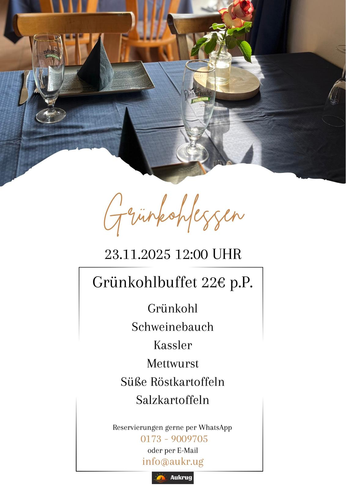

Grünkohlessen 2025
Norddeutsche Tradition trifft gesellige Atmosphäre: Unser Grünkohlessen 2025 lädt zu einem herzhaften, winterlichen Genussmoment im Aukrug Borsfleth ein. Freuen Sie sich auf klassisch zubereiteten Grünkohl mit allen typischen Beilagen – deftig, warm und regional.
Wir servieren Grünkohl klassisch – langsam geschmort für volles Aroma – zusammen mit regionalen Beilagen wie Kasseler, Kohlwurst und Bratkartoffeln. Vegetarische Variante auf Anfrage möglich.
Jetzt Plätze sichern
Die Plätze sind begrenzt – bitte rechtzeitig reservieren.
- Grünkohl klassisch—
- Grünkohl vegetarisch—
- Beilagenvariation—
Ablauf & Stimmung
Wir gestalten den Abend gemütlich und gesellig. Ideal für Gruppen, Vereine oder einfach gute Freunde. Auf Wunsch reservieren wir gerne zusammenhängende Tische.
Hinweise
- Gruppenreservierungen willkommen
- Vegetarische Option bitte bei Reservierung angeben
- Änderungen vorbehalten – finale Details folgen